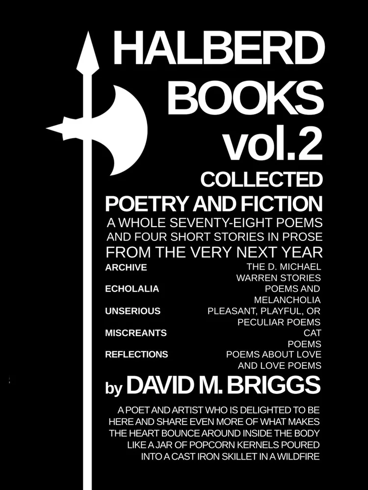

Thematically varied but lyrically secure, Halberd Books vol. 2 combines four new poetry chapbooks with the very first prose fiction chapbook from David M. Briggs. Moods range from helpless grief to bouncing joy, but all throughout runs the rhythmic intensity that has always drawn audiences in.
"David M. Briggs has a way with bringing life and light to the page, and Volume 2 is no different."
—Emily Grace, author of I Wonder if You Wonder about Me
"An all-around excellent read."
—Joshua Amos Graff, author of Poems Winter 2024